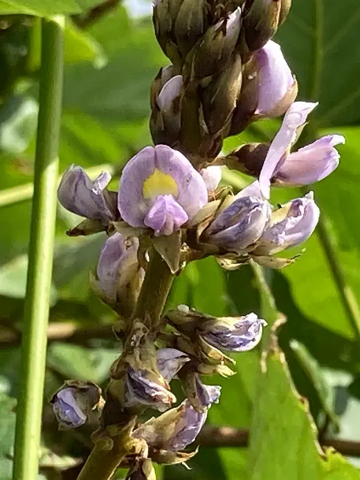

Kudzu
Kudzu is a wild green you can forage from May to September in Southeast and Northeast. Invasive vine smothering southern woods; hairy stems and leaves in threes; grape-scented purple flower spikes in late summer.

When is kudzu in season in the United States?
Kudzu is usually in season May to September. Timing shifts with weather, latitude and altitude.
Where does kudzu grow in the United States?
Kudzu grows in Alabama, Arkansas, Connecticut, Delaware, District of Columbia, Florida, Georgia, Kentucky, Louisiana, Maine, Maryland, Massachusetts, Mississippi, New Hampshire, New Jersey, New York, North Carolina, Oklahoma, Pennsylvania, Rhode Island, South Carolina, Tennessee, Texas, Vermont, Virginia, West Virginia. Regions: Southeast, Northeast.
How do you recognise kudzu?
Invasive vine smothering southern woods; hairy stems and leaves in threes; grape-scented purple flower spikes in late summer.
How do you harvest kudzu?
Pinch off young tips and top leaves before the plant flowers, when they are tender and mild. Leave the roots and lower leaves so it regrows. Pick away from roads, sprayed verges and dog-walking paths.
How do you eat kudzu?
Young leaves fried or cooked like greens; flowers into jelly; root starch thickens sauces.
How do you store kudzu?
Dry or blanch leaves.
What can be confused with kudzu?
Poison ivy (Toxicodendron radicans), rated harmful. Both have leaves in threes. Kudzu leaflets are large, hairy and often lobed; poison ivy leaves are smooth and often glossy. Kudzu stems are fuzzy; poison ivy vines have hairy aerial roots on trees. Poison ivy oil causes blistering rashes, even from dead vines.
What is kudzu good for?
Vitamin A, Vitamin C.
What can you cook with kudzu?
- Kudzu blossom jelly: Grape-scented kudzu flowers steeped and set into purple jelly.